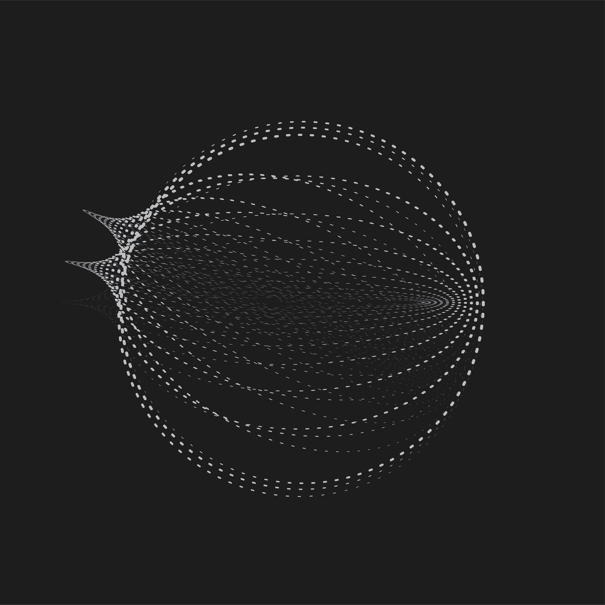
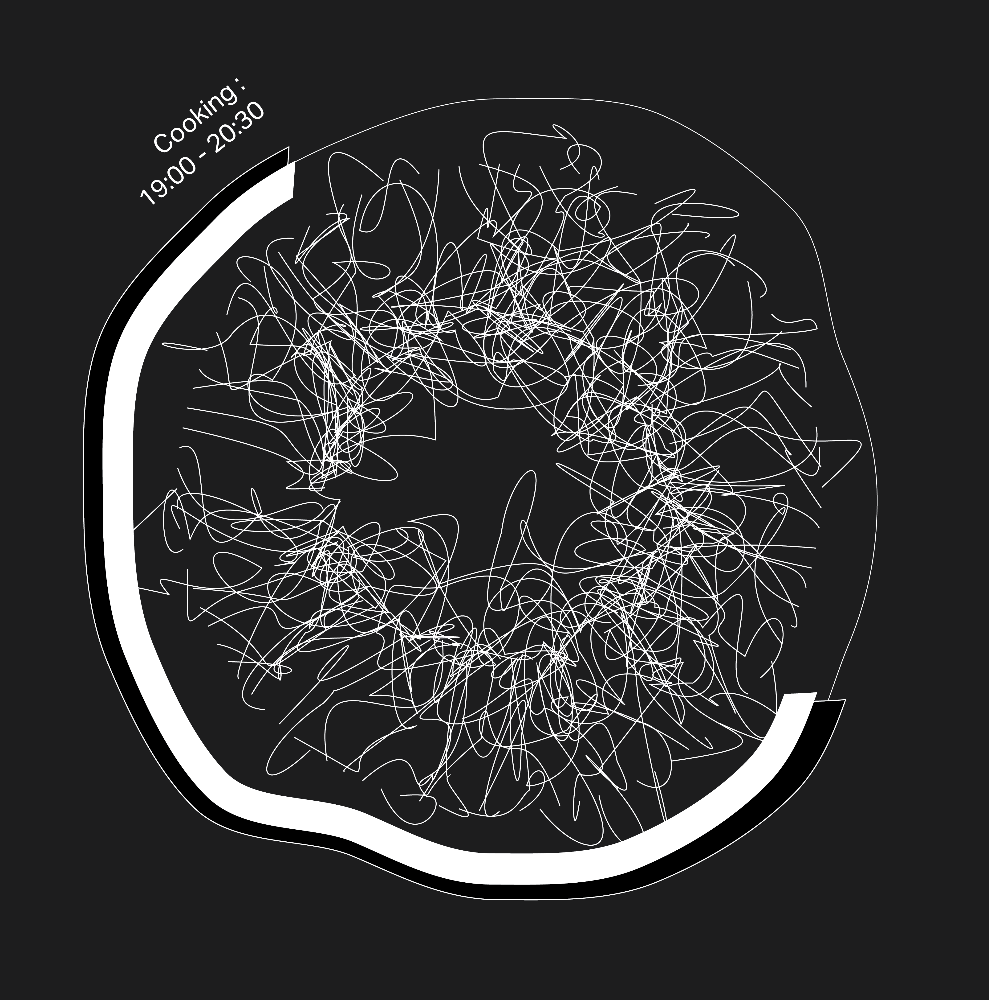
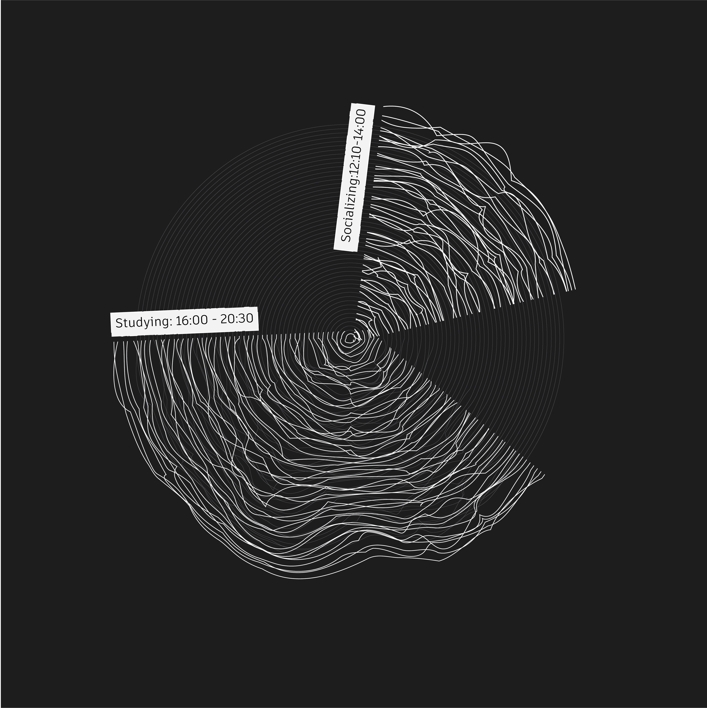

ASSIGNMENT III: MEASURING TIME
SONIC CLOCK
RESEARCH AND PROCESS
Brainstorm
Time Perception
“Time perception refers to a person’s subjective experience of the passage of time, or the perceived duration of events, which can differ significantly between different individuals and/or in different circumstances. Although physical time appears to be more or less objective, psychological time is subjective and potentially malleable, exemplified by common phrases like “time flies when you are having fun” and “a watched pot never boils”. This malleability is made particularly apparent by the various temporal illusions we experience.”
“...Time perception therefore differs from our other senses – sight, hearing, taste, smell, touch, even proprioception – since time cannot be directly perceived, and so must be “reconstructed” in some way by the brain.”
As people, we are objectively conditioned to treat time very strictly and have had to maintain a foundational process of accurate measurement of time throughout history. However, as mentioned previously, we all have our own chronology and subjective and personal passage of time that we undergo. More particularly, in certain situations, we experience that passage through changes in our environment and more individualized encounters. To further explain this concept, I used my everyday living environment/apartment and elements and variables specific to that location in order to construct a new form of time measurement that better demonstrates this notion.
One of the major ways that I maintain awareness of time in my apartment is through different sounds, which is how my brain reconstructs the subjective experience of time and translates it into a more literal form. Hence, for the first stage of this process I recorded a 12hr timeline of various, yet routine-based events in my household where there is a signature sound that triggers the beginning of a new period throughout the clock. Additionally, I also considered whether I can categorize these junctures and transitions in time based on types of activities in order for better communication.
MORNING: Conversations/Gathered in the Kitchen Outside (Construction and ,Machinary noises) Faint Music in the backdround (neighbour’s music lessons).
LATE-MORNING: Most memebrs have left the house/ more quiet Outside noises are more significantly heard. Ac Noise.
NOON: Music Sessions.
More quiet interactions with objects by other
members of the household.
The sound of either the TV or some device during
lunch.
AFTERNOON: Converstions: People back from work/school
Group study sessions (Music in the back)
Cooking.
EVENING: Dinner Time/either music or someone watching TV.
MIDNIGHT: Mostly outside environments/ Noise,
To continue the process I began recording those events and interactions using my phone and varied the extend of the voice memos between 1 to 30 minutes.
Subsequently, I compiled those recordings using Logic Pro X software.
In order to create hours' worth of sounds, I proceeded to slow down and reassign the pitch of certain recordings. Additionally, I observed that at times we either remember or sum up very long spans of time during our days with one activity since the further we are from an event the shorter our perception of the time we spent during that period becomes. Naturally, the change in speed of those recordings serves as both a subconscious reminder and also plays a strong role in representing the waves and textures in time-Occasionally I would compile the same recording with two different speeds in order to enrich the sounds and accentuate the sonic environment.
Some recordings were partially sampled and rerecorded using an instrument in order to harmonize the sounds, create subtle melodies and unify all the layers and elements.






1. Click once to Start.
2. Click on the Red Play button to Pause.
3. Hold and drag the mouse over each playing section to seek back or forwards.
4. Hover your mouse over unplayed sections to showcase the description/event.
ex.
Lines gain contrast and thickness once played.
Sound creates engagement/movement in the lines and serves as a visual timeline.